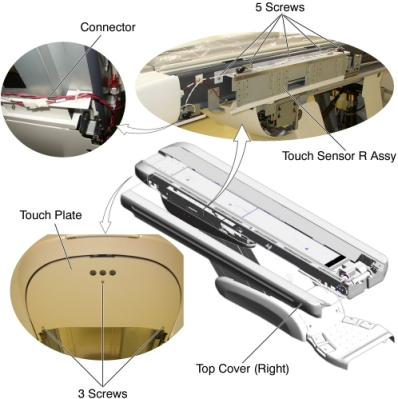

Operating Documentation
Direction 5193574-800, Rev# 22
LightSpeed 7.X Service Methods
Module Version 2.0, Version Date 2/23/12
Operating Documentation |
| Required Persons | Preliminary Reqs | Procedure | Finalization |
|---|---|---|---|
| 1 |
| Last Revised: | 23 Sep 2011 |
| Item | Qty | Effectivity | Part# | Manufacturer | |
|---|---|---|---|---|---|
| Touch Sensor R Assembly (for Global PET/CT Table) | 1 | - | 5127469 | - | |
| Touch Sensor R Assembly (for VT2000 and VT2000X) | 1 | - | 5127469 | - | |
| Touch Sensor R Assembly (for VT1700) | 1 | - | 5134666 | - | |
Raise the Table to maximum height.
Move the Cradle and IMS to OUT limit position.
Remove power from Table by turning off 120VAC, Axial Drive and HVDC switches on Service Switch Panel.
Remove the Top Cover (Right).
Remove the Touch Plate by unscrewing 3 screws.
Cut any tie-wraps, and disconnect the cable connector.
Unscrew 5 screws, and remove the Touch Sensor R Assy from the Table.
Illustration 1: Touch Sensor R Assy

Install the new Touch Sensor R Assy into place, and tighten the 5 screws.
Connect the cable connector.
Adjust the sensor position by two set screws (Refer to Side Touch Sensor Positioning).
Re-install the Touch Plate.
| NOTE: | Do not over tighten the 3 screws, otherwise the Touch Plate function will not work. |
Power up the Table from the Service Switch Panel.
Verify that the Touch Sensor R and the Touch Plate function are operating normally.
Turn off all 3 switches (Axial Drive, HVDC, 120VAC), and re-install the Table covers.
Push up the side touch plate, and verify that the touch sensor is activated without being hidden behind the Table top cover (Refer to Side Touch Sensor Positioning).